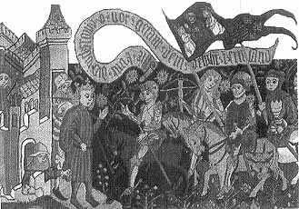
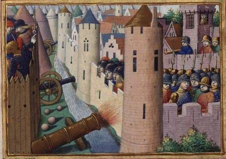
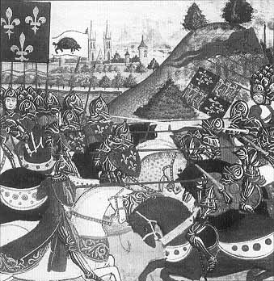

Столетняя война - наименование длительного военного конфликта между Англией и Францией (1337-1453), вызванного стремлением Англии вернуть принадлежавшие ей на континенте Нормандию, Мен, Анжу и др., а также династическими притязаниями английских королей на французский престол. Англия потерпела поражение, на континенте у нее сохранилось всего одно владение - порт Кале, удерживаемый до 1559 г.
Первый период С. в. (1337-1360) характеризовался борьбой сторон за Фландрию и Гиень. В Слёйсском морском сражении 1340 англичане нанесли франц. флоту тяжёлое поражение и завоевали господство на море. В авг. 1346 в битве при Креси они добились превосходства на суше, а в ходе 11-мес. Осады овладели мор. крепостью и портом Кале (1347). После почти 10-летнего перемирия (1347—55) англ, армия развернула успешное наступление по овладению юго-западом Франции (Гиень и Гасконь). В сражении при Пуатъе (1356) франц. армия вновь была разгромлена. Непомерные налоги и поборы, установленные англичанами, и царившая в стране разруха стали причиной восстаний франц. народа — Парижское восстание под руководством Этьена Марселя 1357—58 и Жакерия (1358). Это вынудило Францию подписать в Бретиньи (1360) мирный договор на чрезвычайно тяжёлых условиях — передача Англии земель к югу от Луары до Пиренеев.
Второй период С. в. (136 9—8 0). Стремясь ликвидировать завоевания Англии, король Франции Карл V (правил в 1364—80) реорганизовал армию и упорядочил налоговую систему. Франц. рыцарское ополчение было частично заменено наёмными пех. отрядами, созданы полевая арт-я и новый флот. Главнокоманд. армией (коннетаблем) был назначен талантливый военачальник Б. Дгогск-лен, получивший широкие полномочия. Используя тактику внезапных нападений и пар-тиз. войны, франц. армия к концу 70-х гг. постепенно оттеснила англ, войска к морю. Успеху воен. действий способствовало применение франц. армией арт-и. Сохранив ряд портов на побережье Франции (Бордо, Байонна, Брест, Шербур, Кале) и часть франц. тер. между Бордо и Байонной, Англия в связи с обострившейся обстановкой внутри страны (см. Уота Тайлера восстание 1381) заключила перемирие с Францией, в к-рой также начались нар. волнения.
Третий период С. в. (141 5—2 4). Воспользовавшись ослаблением Франции, вызванным обострением внутр. противоречий (междоусобная война феод, группировок — бургундцев и арманьяков, новые восстания крестьян и горожан), Англия возобновила войну. В 1415 в сражении при Азенкуре англичане нанесли поражение французам, с помощью вступившего с ними в союз герцога Бургундского овладели Сев. Францией, что вынудило Францию подписать 21 мая 1420 в Труа унизительный мирный договор. По условиям договора Франция становилась частью объединённого англо-франц. королевства. Англ, король Генрих V объявлялся правителем Франции на правах регента, а после смерти франц. короля Карла VI получал права на франц. престол. Однако в 1422 внезапно скончались и Карл VI и Генрих V. В результате обострившейся борьбы за королевский престол (1422—23) Франция оказалась в трагическом положении: расчленённой, разграбленной захватчиками. Население на тер., занятой англичанами, было задавлено налогами и контрибуцией. Поэтому для Франции война за королевский престол переросла в национально-освободит. войну.

6 марта 1429 года Жанна прибыла в замок Шинон к королю Франции Карлу VII
Четвёртый период С. в. (1424-1453). С вступлением нар. масс в войну нар-тиз. борьба (особенно в Нормандии) приобрела широкий размах. Партиз. отряды оказывали большую помощь франц. армии: устраивали засады, захватывали сборщиков налогов и уничтожали небольшие отряды пр-ка, вынуждая англичан держать значит, гарнизоны в тылу завоёванной тер. Когда в окт. 1428 англ, армия и бургундцы осадили Орлеан — последнюю сильную крепость на не занятой французами тер., национально-освободит. борьба ещё более усилилась. Её возглавила Жанна д'Арк, под рук-вом к-рой сражение за Орлеан было выиграно (май 1429). В 1437 франц. войска взяли Париж, в 1441 — отвоевали Шампань, в 1459 — Мен и Нормандию, в 1453 — Гиень. 19 окт. 1453 английская армия капитулировала в Бордо. Это означало окончание войны.

Осада Орлеана англичанами

Жанны д'Арк ведет французов в бой
С. в. принесла огромные бедствия франц. народу, нанесла большой урон экономике страны, но она способствовала росту нац. самосознания. После изгнания англичан завершился исторически прогрес. процесс объединения Франции. В Англии С. в. временно закрепила господство феод, аристократии и рыцарства, что замедлило процесс централизации гос-ва. С. в. продемонстрировала преимущество англ, наёмного войска перед франц. феод, рыцарским ополчением, что заставило Францию создать постоянное наёмное войско. Это войско, находящееся на службе у короля, имело черты регулярной армии в организации, воинской дисциплине, обучении (см. Ордонан-савые роты). Политич. и материальной основой наёмного войска был союз королевской власти и горожан, заинтересованных в преодолении феод, раздробленности. Война показала, что тяжёлая рыцарская конница утратила прежнее значение, увеличилась роль пехоты, особенно лучников, к-рые успешно боролись с рыцарями. Появившееся в ходе войны огнестр. оружие хотя и уступало луку и арбалету, но всё шире применялось в ходе сражений. Изменение характера войны, превращение её в народную, освободительную привело к освобождению Франции от захватчиков.